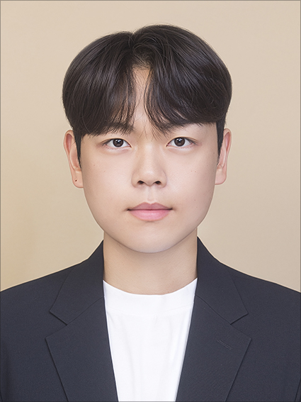

Hansung University, Seoul
Expected Feb. 2027B.S. in Industrial and Systems Engineering · Industrial Engineering Track, Big Data Track

B.S. Candidate, Industrial and Systems Engineering
Hansung University, Seoul
I work on vision–language models and multimodal representation learning, with one question running through it: does a model’s confidence survive what we do to it? Compression, quantization and adaptation all preserve the ranking of predictions while changing the gaps between them — and accuracy only measures the ranking. This grew out of building prototype-based visual diagnosis models with evidential uncertainty, where a single temperature setting once separated a near-perfect classifier from a usable one. I am applying to master’s programs for Spring 2027.
B.S. in Industrial and Systems Engineering · Industrial Engineering Track, Big Data Track
Career Exploration Credit Program, Hansung University · Advisor: Prof. Seoung-Ho Choi
Designed and trained a dual-path evidential model for visual diagnosis with calibrated predictive uncertainty. Authored four first-author manuscripts submitted to SCIE-indexed journals.
Hansung University · Advisor: Prof. Qinglong Li
Contributed to a published review-helpfulness prediction study combining BERT-based text representations with reviewer metadata across 708K Yelp reviews.
Titles withheld at the corresponding author’s request while under review.
Method details for manuscripts under review are withheld.
A classifier that reasons through learned class prototypes and reports how much evidence supports each class. Built and evaluated end to end with grouped cross-validation.
What it taught me. Accuracy can look normal while the probabilities are meaningless. Since then I read the confidence distribution before the accuracy table.
I build methods as independent modules behind separate flags, so ablation is possible by construction rather than added as an afterthought.
What it taught me. Experiment design is for giving a hypothesis a chance to fail, not for confirming it.
In field diagnosis not every sample can be inspected. This work attaches guarantees to a prediction and uses them to decide which samples a person should check first.
What it taught me. Uncertainty means something only as an input to a decision. “This prediction is uncertain” is not information; “inspect this sample first” is.
Before adding an adaptive component to a prediction pipeline, I measured the ceiling on what it could contribute. The expected gain was not statistically significant, and I reported it as such.
Why I keep it here. Not claiming an improvement you have not measured is the starting point for working on trustworthy models, not an exception to it.
Predicting review helpfulness from review text together with reviewer metadata and interaction signals, on a large-scale review corpus. Signals that text representations alone missed turned out to sit in the metadata. Received the Excellence Award at the Hansung University Capstone Design showcase.
What it taught me. Which signal actually contributes is rarely what intuition says.
A retrieval-augmented system that extracts requested fields from natural-language questions. Output shifted substantially with prompt design alone, which was my first encounter with how wide the band of behaviour is that you can change without touching the model.